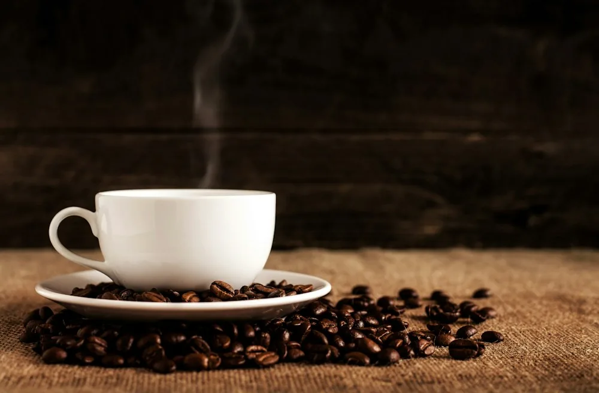
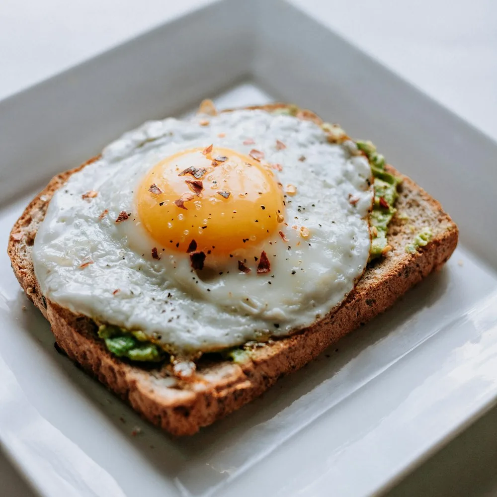
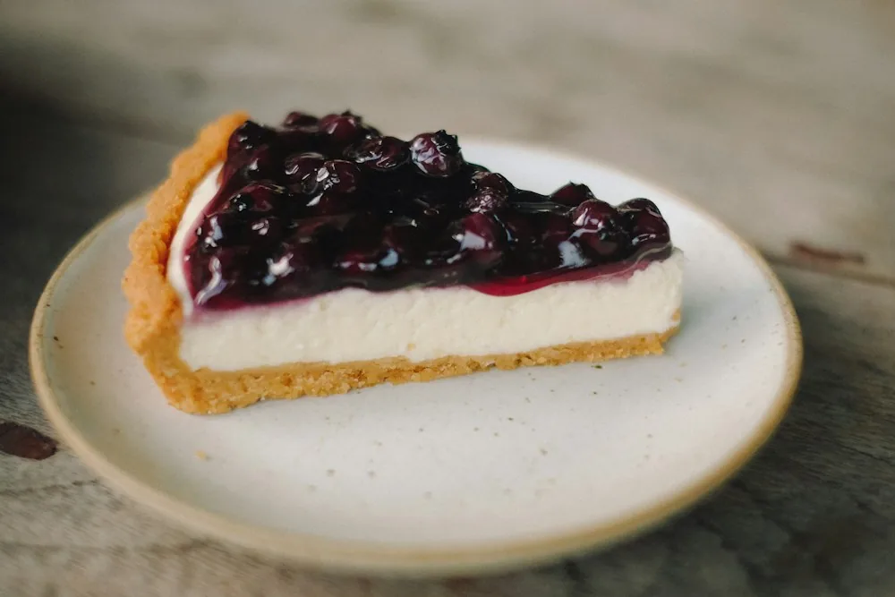

НАШ ЛЮБИМЫЙ
НАШ ЛЮБИМЫЙКапучино
240 ₽Эспрессо, молоко, молочная пена.
250 млМожно без кофеинаСостав и аллергены
Состав: Эспрессо, молоко, молочная пена.
Аллергены: Молоко.
ПРОСТЫЕ УДОВОЛЬСТВИЯ
Сварим ваш привычный.
Или поможем найти новый любимый.
Фото — примеры подачи из Unsplash, а не блюда реальной кофейни.
НАШ ЛЮБИМЫЙЭспрессо, молоко, молочная пена.
250 млМожно без кофеинаСостав: Эспрессо, молоко, молочная пена.
Аллергены: Молоко.
 МЯГКИЙ И СЛИВОЧНЫЙ
МЯГКИЙ И СЛИВОЧНЫЙЭспрессо, молоко, ванильный сироп.
350 млМожно без кофеинаСостав: Эспрессо, молоко, ванильный сироп.
Аллергены: Молоко.
 ИЗ ПЕЧИ С УТРА
ИЗ ПЕЧИ С УТРАПшеничная мука, сливочное масло, молоко, яйцо, сахар, дрожжи.
70 гСостав: Пшеничная мука, сливочное масло, молоко, яйцо, сахар, дрожжи.
Аллергены: Глютен, молоко, яйцо.

ДЛЯ ЦЕНИТЕЛЕЙМолотый кофе и фильтрованная вода.
250 млБез молокаСостав: Молотый кофе и фильтрованная вода.
Аллергены: Нет в рецептуре.

ЗАВТРАК ВЕСЬ ДЕНЬПшеничный хлеб, авокадо, яйцо, томаты, зелень, оливковое масло.
180 гБез молокаСостав: Пшеничный хлеб, авокадо, яйцо, томаты, зелень, оливковое масло.
Аллергены: Глютен, яйцо.

К КОФЕСливочный сыр, сливки, яйцо, пшеничное печенье, масло, ягодный соус.
130 гСостав: Сливочный сыр, сливки, яйцо, пшеничное печенье, масло, ягодный соус.
Аллергены: Глютен, молоко, яйцо.
 ОСЕНЬ / ЗИМА
ОСЕНЬ / ЗИМАЭспрессо, молоко, тыквенное пюре, сахар, корица, имбирь, мускатный орех.
350 млМожно без кофеинаСостав: Эспрессо, молоко, тыквенное пюре, сахар, корица, имбирь, мускатный орех.
Аллергены: Молоко.
Чёрный чай, апельсин, имбирь, корица и мёд.
400 млБез молока · содержит кофеинСостав: Чёрный чай, апельсин, имбирь, корица и мёд.
Аллергены: Нет в рецептуре.